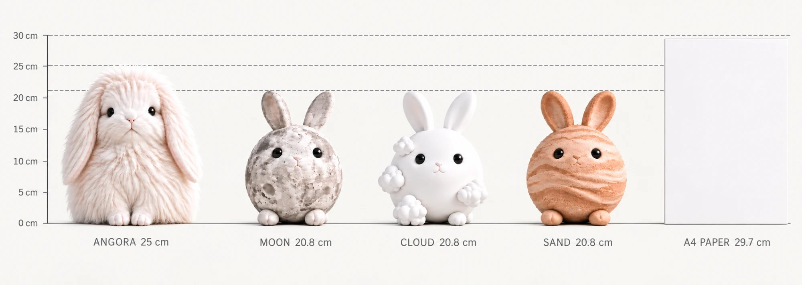

<title>우주토끼 wuzu tokki</title>
<link rel="preconnect" href="https://fonts.gstatic.com" crossorigin>
<link rel="stylesheet" href="https://fonts.googleapis.com/css2?family=Hahmlet:wght@200;300;400&family=IBM+Plex+Sans+KR:wght@300;400;500&display=swap">
<style>
  :root{
    --ground:#FBFAF7; --surface:#F1EEE8; --ink:#1A1916; --ink-soft:#5C584E;
    --muted:#948E80; --rule:#E3DED3; --rule-strong:#1A1916;
    --angora:#E0D2C4; --moon:#A9A69D; --cloud:#BCCEDA; --sand:#C9A883; --rock:#6C6860;
    --serif:"Hahmlet",Apple SD Gothic Neo,"Noto Serif KR",Georgia,serif;
    --sans:"IBM Plex Sans KR",Apple SD Gothic Neo,"Malgun Gothic",system-ui,sans-serif;
    --gut:clamp(1rem,5vw,4.5rem);
    --stack:clamp(4.5rem,11vw,9rem);
  }
  @media (prefers-color-scheme:dark){
    :root:not([data-theme="light"]){
      color-scheme:dark;
      --ground:#131210; --surface:#1B1A16; --ink:#EDE8DD; --ink-soft:#A39D90;
      --muted:#7A7468; --rule:#2D2B25; --rule-strong:#EDE8DD;
    }
  }
  :root[data-theme="dark"]{
    color-scheme:dark;
    --ground:#131210; --surface:#1B1A16; --ink:#EDE8DD; --ink-soft:#A39D90;
    --muted:#7A7468; --rule:#2D2B25; --rule-strong:#EDE8DD;
  }

  *,*::before,*::after{box-sizing:border-box}
  body{
    margin:0; background:var(--ground); color:var(--ink);
    font-family:var(--sans); font-weight:300; font-size:clamp(.9rem,.55vw + .78rem,1rem);
    line-height:1.85; -webkit-font-smoothing:antialiased;
    word-break:keep-all; overflow-wrap:break-word;
  }
  img{max-width:100%; height:auto; display:block}
  a{color:inherit}
  :focus-visible{outline:2px solid var(--ink); outline-offset:3px}
  @media (prefers-reduced-motion:reduce){*{animation:none!important; transition:none!important}}

  .wrap{padding-inline:var(--gut); max-width:1360px; margin-inline:auto}
  .eyebrow{
    font-size:.6875rem; letter-spacing:.22em; color:var(--muted);
    display:flex; gap:1em; align-items:baseline;
  }
  .eyebrow b{font-weight:400; color:var(--ink)}
  h2{
    font-family:var(--serif); font-weight:300; color:var(--ink);
    font-size:clamp(1.45rem,2.6vw + .6rem,2.35rem); line-height:1.42;
    margin:.5rem 0 0; text-wrap:balance; letter-spacing:-.01em;
  }
  .lede{max-width:34em; color:var(--ink-soft); margin-top:1.5rem}
  section{padding-block:var(--stack)}
  .tinted{background:var(--surface)}

  /* ---------- header ---------- */
  header{
    position:sticky; top:env(safe-area-inset-top,0px); z-index:20;
    background:color-mix(in srgb,var(--ground) 88%,transparent);
    backdrop-filter:blur(14px); border-bottom:1px solid var(--rule);
  }
  .bar{
    display:flex; align-items:center; justify-content:space-between;
    gap:1rem; padding-block:.9rem;
  }
  .mark img{width:clamp(104px,15vw,132px)}
  .logo .lit{display:none}
  @media (prefers-color-scheme:dark){
    :root:not([data-theme="light"]) .logo .dk{display:none}
    :root:not([data-theme="light"]) .logo .lit{display:block}
  }
  :root[data-theme="dark"] .logo .dk{display:none}
  :root[data-theme="dark"] .logo .lit{display:block}
  nav{display:flex; gap:clamp(.9rem,2.4vw,1.9rem); font-size:.75rem; letter-spacing:.1em}
  nav a{color:var(--muted); text-decoration:none; padding-block:.35rem}
  nav a:hover{color:var(--ink)}
  @media (max-width:560px){ nav{display:none} }

  /* ---------- hero ---------- */
  .hero{padding-block:clamp(2.5rem,7vw,5rem) 0}
  .hero-grid{display:grid; gap:clamp(2rem,5vw,3.5rem); align-items:center}
  @media (min-width:900px){ .hero-grid{grid-template-columns:minmax(15rem,21rem) 1fr} }
  .hero h1{margin:0; font-size:0; line-height:0}
  .hero h1 img{width:clamp(180px,42vw,276px)}
  .hero .ko{
    margin-top:1.15rem; font-size:.8125rem; letter-spacing:.4em; color:var(--ink-soft);
  }
  .hero .tag{
    font-family:var(--serif); font-weight:300; color:var(--ink);
    font-size:clamp(1.05rem,1.3vw + .75rem,1.4rem); line-height:1.6;
    margin-top:2rem; padding-top:2rem; border-top:1px solid var(--rule-strong);
    max-width:16em;
  }

  /* ---------- full-bleed band ---------- */
  .bleed{width:100%; margin-block:0}
  .bleed img{width:100%}
  .band3{display:grid; grid-template-columns:1fr; gap:2px}
  @media (min-width:760px){ .band3{grid-template-columns:repeat(3,1fr)} }
  figure{margin:0}
  figcaption{
    font-size:.75rem; color:var(--muted); letter-spacing:.04em;
    padding:.85rem var(--gut) 0;
  }

  /* ---------- 물질과 사람 ---------- */
  .verses{
    font-family:var(--serif); font-weight:200; color:var(--ink);
    font-size:clamp(1.15rem,1.9vw + .7rem,1.85rem); line-height:1.75;
    margin:clamp(2rem,5vw,3.5rem) 0 0; max-width:22em;
  }
  .verses p{margin:0}
  .ask{
    font-family:var(--serif); font-weight:300;
    font-size:clamp(1.3rem,2.4vw + .7rem,2.1rem);
    margin-top:clamp(2.5rem,6vw,4rem); padding-top:1.75rem;
    border-top:1px solid var(--rule);
  }

  /* ---------- 형태 ---------- */
  .split{display:grid; gap:clamp(2rem,5vw,3.75rem); align-items:start}
  @media (min-width:900px){ .split{grid-template-columns:1fr minmax(13rem,17rem)} }
  .rules{list-style:none; margin:0; padding:0}
  .rules li{
    border-top:1px solid var(--rule); padding:.7rem 0;
    font-size:.8125rem; color:var(--ink-soft); line-height:1.6;
  }

  /* ---------- 캐릭터 ---------- */
  .roster{
    display:grid; gap:1px; background:var(--rule);
    border-block:1px solid var(--rule); margin-top:clamp(2rem,5vw,3rem);
  }
  @media (min-width:640px){ .roster{grid-template-columns:repeat(2,1fr)} }
  @media (min-width:1040px){ .roster{grid-template-columns:repeat(5,1fr)} }
  .char{
    all:unset; display:block; cursor:pointer; background:var(--ground);
    padding:1.6rem clamp(1rem,2vw,1.4rem) 1.8rem;
    transition:background .25s ease;
  }
  .char:hover,.char[aria-pressed="true"]{background:var(--surface)}
  .char:focus-visible{outline:2px solid var(--ink); outline-offset:-3px}
  .dot{
    width:.6rem; height:.6rem; border-radius:50%; display:block;
    border:1px solid color-mix(in srgb,var(--ink) 22%,transparent);
  }
  .char h3{
    margin:1.1rem 0 .1rem; font-family:var(--serif); font-weight:300;
    font-size:1.0625rem; letter-spacing:-.01em;
  }
  .char .en{font-size:.6875rem; letter-spacing:.16em; color:var(--muted)}
  .char .mat{font-size:.8125rem; color:var(--ink-soft); margin-top:1rem; line-height:1.65}
  .char .q{
    font-family:var(--serif); font-size:.9375rem; line-height:1.6;
    color:var(--ink); margin-top:1rem;
  }

  /* ---------- 비교표 ---------- */
  .scroller{overflow-x:auto; margin-top:clamp(2rem,5vw,3rem); -webkit-overflow-scrolling:touch}
  table{border-collapse:collapse; width:100%; min-width:46rem; font-size:.8125rem}
  th,td{
    text-align:left; vertical-align:top; padding:.95rem 1.1rem .95rem 0;
    border-bottom:1px solid var(--rule); line-height:1.55;
    transition:opacity .25s ease;
  }
  thead th{border-bottom:1px solid var(--rule-strong); padding-bottom:.7rem}
  thead .nm{font-family:var(--serif); font-weight:300; font-size:1rem; display:block}
  thead .en{font-size:.625rem; letter-spacing:.16em; color:var(--muted); font-weight:300}
  tbody th{
    font-weight:300; color:var(--muted); font-size:.75rem;
    width:7rem; letter-spacing:.04em;
  }
  td.q-row{font-family:var(--serif); color:var(--ink)}
  tbody td{color:var(--ink)}
  .tbl.has-sel [data-mat]{opacity:.28}
  .tbl.has-sel [data-mat].on{opacity:1}
  .hint{font-size:.75rem; color:var(--muted); margin-top:1rem}

  /* ---------- 시각 언어 / 확장 ---------- */
  .cols{display:grid; gap:0 clamp(1.5rem,3vw,2.5rem); margin-top:clamp(2rem,5vw,3rem)}
  @media (min-width:560px){ .cols{grid-template-columns:repeat(2,1fr)} }
  @media (min-width:1000px){ .cols{grid-template-columns:repeat(4,1fr)} }
  .cols p{
    border-top:1px solid var(--rule); padding:.7rem 0; margin:0;
    font-size:.8125rem; color:var(--ink-soft); line-height:1.6;
  }
  .mats{display:grid; gap:0 clamp(1.5rem,3vw,2.5rem); margin-top:clamp(2rem,5vw,3rem)}
  @media (min-width:480px){ .mats{grid-template-columns:repeat(2,1fr)} }
  @media (min-width:760px){ .mats{grid-template-columns:repeat(5,1fr)} }
  .mats span{
    border-top:1px solid var(--rule-strong); padding:.9rem 0 1.6rem;
    font-family:var(--serif); font-size:1.0625rem; display:block;
  }
  .note{
    font-size:.75rem; color:var(--muted); margin-top:1.5rem;
    padding-top:1.1rem; border-top:1px solid var(--rule);
  }

  /* ---------- 경험 ---------- */
  .groups{display:grid; gap:1.75rem clamp(1.5rem,3vw,2.5rem); margin-top:clamp(2rem,5vw,3rem)}
  @media (min-width:560px){ .groups{grid-template-columns:repeat(2,1fr)} }
  @media (min-width:1000px){ .groups{grid-template-columns:repeat(4,1fr)} }
  .groups h3{
    margin:0; font-size:.875rem; font-weight:400;
    border-top:1px solid var(--rule-strong); padding-top:.8rem;
  }
  .groups ul{list-style:none; margin:.55rem 0 0; padding:0}
  .groups li{font-size:.8125rem; color:var(--ink-soft); line-height:1.85}

  /* ---------- 마무리 ---------- */
  .closing{text-align:left}
  .closing .en{
    font-family:var(--serif); font-weight:300;
    font-size:clamp(1.6rem,3.4vw + .8rem,2.9rem); margin:0;
  }
  .closing .body{
    font-family:var(--serif); font-weight:200; color:var(--ink-soft);
    font-size:clamp(1rem,1.2vw + .75rem,1.3rem); line-height:1.8;
    margin:2rem 0 0; max-width:24em;
  }
  .closing .final{
    font-family:var(--serif); color:var(--ink);
    font-size:clamp(1.25rem,2.2vw + .7rem,1.9rem);
    margin-top:2.5rem; padding-top:1.75rem; border-top:1px solid var(--rule-strong);
  }
  footer{border-top:1px solid var(--rule); padding-block:2.5rem}
  .foot{
    display:flex; flex-wrap:wrap; gap:.6rem 1.5rem;
    justify-content:space-between; font-size:.75rem; color:var(--muted);
    letter-spacing:.06em;
  }
</style>

<header>
  <div class="wrap bar">
    <span class="mark logo">
      
      
    </span>
    <nav>
      <a href="#material">물질</a>
      <a href="#form">형태</a>
      <a href="#tokki">토끼들</a>
      <a href="#experience">경험</a>
    </nav>
  </div>
</header>

<main>
  <section class="hero">
    <div class="wrap hero-grid">
      <div>
        <h1 class="logo">
          
          
        </h1>
        <p class="ko">우 주 토 끼</p>
        <p class="tag">온 우주의 물질로<br>이루어진 토끼들</p>
      </div>
      
    </div>
  </section>

  <section id="material">
    <div class="wrap">
      <p class="eyebrow"><b>01</b> the beginning</p>
      <h2>우주의 모든 물질이 토끼가 된다면?</h2>
      <p class="lede">
        우주토끼는 달, 구름, 모래, 암석처럼 서로 다른 물질로 이루어진 토끼들의
        세계입니다. 형태는 같지만, 촉감과 무게와 흔적은 저마다 다릅니다.
      </p>
    </div>
    <figure class="bleed" style="margin-top:clamp(2.5rem,6vw,4rem)">
      
    </figure>
  </section>

  <section class="tinted">
    <div class="wrap">
      <p class="eyebrow"><b>02</b> material &amp; person</p>
      <h2>물질의 성질은 사람의 모습과 닮아 있습니다</h2>
      <div class="verses">
        <p>어떤 물질은 쉽게 모양이 달라지고,</p>
        <p>어떤 물질은 오래 흔적을 품습니다.</p>
        <p>어떤 것은 흩어졌다 다시 모이고,</p>
        <p>어떤 것은 단단한 채로 작은 균열을 지닙니다.</p>
      </div>
      <p class="lede">우주토끼는 그 성질로 우리의 서로 다른 모습을 바라봅니다.</p>
      <p class="ask">당신은 어떤 토끼인가요?</p>
    </div>
  </section>

  <section id="form">
    <div class="wrap">
      <p class="eyebrow"><b>03</b> one form</p>
      <h2>다르지만, 같은 세계에서 태어난 형태</h2>
      <div class="split" style="margin-top:clamp(2rem,5vw,3rem)">
        <figure>
          
        </figure>
        <ul class="rules">
          <li>둥글지만 완전한 구형은 아닌 몸</li>
          <li>바닥에 안정적으로 닿는 배와 발</li>
          <li>짧고 단순한 앞발과 뒷발</li>
          <li>언제나 있는 귀와 꼬리</li>
          <li>캐릭터마다 통일된 얼굴 비례</li>
          <li>물성에 따라 달라지는 표면과 실루엣</li>
          <li>장식보다 재료의 특징을 우선</li>
        </ul>
      </div>
    </div>
  </section>

  <section id="tokki" class="tinted">
    <div class="wrap">
      <p class="eyebrow"><b>04</b> first materials</p>
      <h2>우주토끼를 이루는 첫 번째 물질들</h2>

      <div class="roster" id="roster">
        <button class="char" type="button" aria-pressed="false" data-pick="angora">
          <span class="dot" style="background:var(--angora)"></span>
          <h3>앙고라토끼</h3><span class="en">angora</span>
          <p class="mat">길게 자란 털이 몸의 윤곽을 덮습니다.</p>
          <p class="q">나는 사람들 사이를 잇는 자리에 서 있을까요?</p>
        </button>
        <button class="char" type="button" aria-pressed="false" data-pick="moon">
          <span class="dot" style="background:var(--moon)"></span>
          <h3>달토끼</h3><span class="en">moon</span>
          <p class="mat">회백색 표면에 크고 작은 분화구가 남아 있습니다.</p>
          <p class="q">나는 지나온 흔적을 오래 간직하는 편일까요?</p>
        </button>
        <button class="char" type="button" aria-pressed="false" data-pick="cloud">
          <span class="dot" style="background:var(--cloud)"></span>
          <h3>구름토끼</h3><span class="en">cloud</span>
          <p class="mat">희고 푸른 기가 도는 몸이 덩어리로 뭉쳐 있습니다.</p>
          <p class="q">나는 흩어졌다가도 다시 모이는 편일까요?</p>
        </button>
        <button class="char" type="button" aria-pressed="false" data-pick="sand">
          <span class="dot" style="background:var(--sand)"></span>
          <h3>모래토끼</h3><span class="en">sand</span>
          <p class="mat">가는 알갱이가 층층이 쌓여 결을 만듭니다.</p>
          <p class="q">나는 눌린 자리에서 새 모양이 되는 편일까요?</p>
        </button>
        <button class="char" type="button" aria-pressed="false" data-pick="rock">
          <span class="dot" style="background:var(--rock)"></span>
          <h3>암석토끼</h3><span class="en">rock</span>
          <p class="mat">단단히 굳은 표면 안쪽으로 가는 결이 지나갑니다.</p>
          <p class="q">나는 단단한 겉 안쪽에 어떤 결을 품고 있을까요?</p>
        </button>
      </div>

      <div class="scroller">
        <table class="tbl" id="tbl">
          <thead>
            <tr>
              <th scope="col"></th>
              <th scope="col" data-mat="angora"><span class="nm">앙고라토끼</span><span class="en">angora</span></th>
              <th scope="col" data-mat="moon"><span class="nm">달토끼</span><span class="en">moon</span></th>
              <th scope="col" data-mat="cloud"><span class="nm">구름토끼</span><span class="en">cloud</span></th>
              <th scope="col" data-mat="sand"><span class="nm">모래토끼</span><span class="en">sand</span></th>
              <th scope="col" data-mat="rock"><span class="nm">암석토끼</span><span class="en">rock</span></th>
            </tr>
          </thead>
          <tbody>
            <tr><th scope="row">물질</th>
              <td data-mat="angora">긴 털</td><td data-mat="moon">달 표면</td>
              <td data-mat="cloud">구름</td><td data-mat="sand">모래</td><td data-mat="rock">암석</td></tr>
            <tr><th scope="row">표면</th>
              <td data-mat="angora">결을 따라 흐르는 장모</td><td data-mat="moon">크고 작은 분화구</td>
              <td data-mat="cloud">매끄러운 무광</td><td data-mat="sand">층층이 쌓인 결</td>
              <td data-mat="rock">각지고 단단한 면</td></tr>
            <tr><th scope="row">형태</th>
              <td data-mat="angora">털이 감싼 둥근 몸</td><td data-mat="moon">구체에 가까운 몸</td>
              <td data-mat="cloud">뭉친 덩어리 실루엣</td><td data-mat="sand">결이 감도는 둥근 몸</td>
              <td data-mat="rock">면으로 깎인 둥근 몸</td></tr>
            <tr><th scope="row">색감</th>
              <td data-mat="angora">아이보리 · 연한 분홍</td><td data-mat="moon">회백색</td>
              <td data-mat="cloud">백색 · 청백색</td><td data-mat="sand">웜베이지</td>
              <td data-mat="rock">짙은 회색 · 금빛 결</td></tr>
            <tr><th scope="row">인상</th>
              <td data-mat="angora">폭신하고 따뜻함</td><td data-mat="moon">서늘하고 고요함</td>
              <td data-mat="cloud">부드럽고 가벼움</td><td data-mat="sand">서걱이고 건조함</td>
              <td data-mat="rock">묵직하고 단단함</td></tr>
            <tr><th scope="row">질문</th>
              <td class="q-row" data-mat="angora">나는 어디에 서 있을까요</td>
              <td class="q-row" data-mat="moon">흔적을 오래 간직할까요</td>
              <td class="q-row" data-mat="cloud">흩어졌다 다시 모일까요</td>
              <td class="q-row" data-mat="sand">눌린 자리에서 달라질까요</td>
              <td class="q-row" data-mat="rock">안쪽에 어떤 결이 있을까요</td></tr>
          </tbody>
        </table>
      </div>
      <p class="hint" id="hint">차이는 색이 아니라 표면과 실루엣에서 먼저 드러납니다. 위에서 토끼를 고르면 그 줄만 남습니다.</p>
    </div>
  </section>

  <section>
    <div class="wrap">
      <p class="eyebrow"><b>05</b> visual language</p>
      <h2>부드럽고 조용하지만, 모두 다른 존재들</h2>
      <div class="cols">
        <p>아이보리 기가 남은 부드러운 색감</p>
        <p>파스텔과 저채도 중심의 색 구성</p>
        <p>광택보다 재료의 표면감을 우선</p>
        <p>단순하고 안정적인 실루엣</p>
        <p>절제한 하이라이트</p>
        <p>귀여움과 오브제성의 균형</p>
        <p>흔들림 없는 정돈된 마감</p>
        <p>사실적이지 않아도 물성은 남는 표현</p>
      </div>
    </div>
  </section>

  <section class="tinted">
    <div class="wrap">
      <p class="eyebrow"><b>06</b> expanding materials</p>
      <h2>우주토끼는 계속 다른 물질을 발견합니다</h2>
      <p class="lede">캐릭터를 늘리는 게 아니라, 새로운 물질을 만날 때마다 세계가 한 겹씩 넓어집니다.</p>
      <div class="mats">
        <span>자개</span><span>푸딩</span><span>모찌</span><span>오로라</span><span>바다</span>
        <span>아이스크림</span><span>커피</span><span>비눗방울</span><span>태양</span><span>크림</span>
      </div>
      <p class="note">확정된 계획이 아니라, 앞으로 탐구할 수 있는 방향입니다.</p>
    </div>
  </section>

  <section id="experience">
    <div class="wrap">
      <p class="eyebrow"><b>07</b> experience</p>
      <h2>보고, 만지고, 모으고, 공간에서 만나는 토끼</h2>
      <div class="groups">
        <div><h3>오브제로</h3><ul>
          <li>수집형 아트토이</li><li>디자인 오브제</li><li>미니 피규어</li><li>대표 캐릭터 봉제 인형</li>
        </ul></div>
        <div><h3>곁에 두는 것으로</h3><ul>
          <li>키링과 백참</li><li>패키지와 질문 카드</li>
        </ul></div>
        <div><h3>공간에서</h3><ul>
          <li>팝업 전시</li><li>공간 연출</li>
        </ul></div>
        <div><h3>이미지로</h3><ul>
          <li>브랜드 협업</li><li>이미지와 짧은 콘텐츠</li>
        </ul></div>
      </div>
    </div>
    <figure class="bleed" style="margin-top:clamp(2.5rem,6vw,4rem)">
      <div class="band3">
        
        
        
      </div>
      <figcaption>실제 제품이 아니라, 경험의 방향을 보여주는 이미지 시안입니다.</figcaption>
    </figure>
  </section>

  <section class="closing">
    <div class="wrap">
      <p class="eyebrow"><b>08</b> would you, tokki?</p>
      <p class="en">Would you, Tokki?</p>
      <p class="body">
        서로 다른 물질로 이루어진 우주토끼들이 하나의 질문을 건넵니다.
        나는 어떤 성질을 지녔는지, 어떤 흔적을 품고 있는지,
        어떤 모습으로 변해가는지.
      </p>
      <p class="final">당신은 어떤 토끼인가요?</p>
    </div>
  </section>
</main>

<footer>
  <div class="wrap foot">
    <span>wuzu tokki · 우주토끼</span>
    <span>온 우주의 물질로 이루어진 토끼들</span>
  </div>
</footer>

<script>
  (function () {
    var tbl = document.getElementById('tbl');
    var hint = document.getElementById('hint');
    var chars = Array.prototype.slice.call(document.querySelectorAll('.char'));
    var baseHint = hint.textContent;
    var current = null;

    function apply(pick) {
      current = pick;
      chars.forEach(function (b) {
        b.setAttribute('aria-pressed', String(b.dataset.pick === pick));
      });
      tbl.classList.toggle('has-sel', !!pick);
      tbl.querySelectorAll('[data-mat]').forEach(function (c) {
        c.classList.toggle('on', c.dataset.mat === pick);
      });
      hint.textContent = pick
        ? '한 종만 보고 있습니다. 다시 누르면 다섯 종이 모두 돌아옵니다.'
        : baseHint;
    }

    chars.forEach(function (b) {
      b.addEventListener('click', function () {
        apply(current === b.dataset.pick ? null : b.dataset.pick);
      });
    });
  })();
</script>
